Page 1
學 AI 真的好累，但不學又更焦慮
怎麼讓自己安定學習、用 AI 創造實際價值
Page 2
8+ 年經驗產品設計師
下班後是職涯諮詢師
嗨！我是 Kat，設計對我來說不只是職業，也是一種生活方式。透過設計，我得以更認識自己，以及人類如何和社會互動。
目前也把設計思維運用在職涯諮詢服務中，已累積 160+ 場次。
Page 3
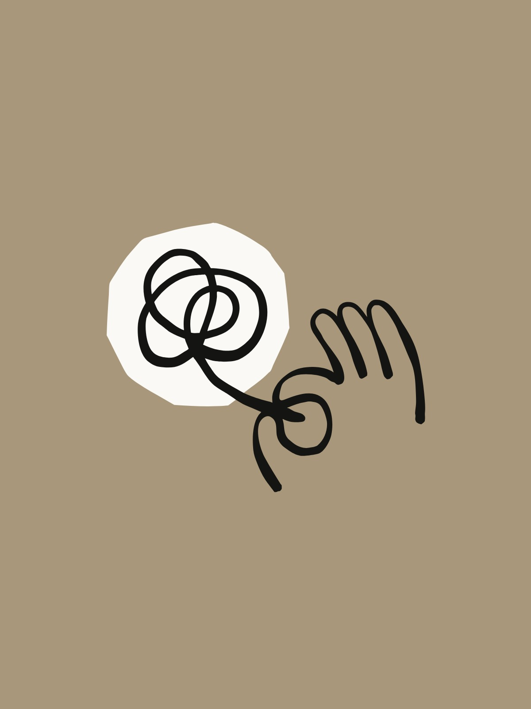
在諮詢中越來越常聽到 AI 焦慮
AI 在 2022 年爆發式成長，很多人的焦慮也因此爆炸，我在這 4 年中，從排斥、厭倦到無奈接受，再到現在能靈活運用。
希望透過講座分享我的學習路徑和實際產出，讓大家在混亂的 AI 時代下找到具體方向。
Page 4
450 位聽眾想獲得什麼指引或啟發
AI 與設計工作流整合：建立品牌規範、工作上的實際應用
AI 生活應用與協作：將 AI 應用在生活中、人機協作原則
調整心態與職涯定位：面對 AI 焦慮、未來方向怎麼走
具體學習策略與資源：從哪裡開始系統化學習
Page 5
隨著時間的推移，即使人的心理保持不變，世界上的工具、事物和文化會持續改變。科技會繼續前進。
雖然設計的原則不會變，但應用這些原則的方法必須因新的人類活動、新的科技，和新的溝通互動方式而改變。
— Don Norman《設計的心理學》Page 6
Agenda
- 01 ✦ AI 時代最大的三個矛盾
- 02 ✦ 事半功倍的 Claude Code 前置準備
- 03 ✦ 建立你的品牌規範和品質標準
- 04 ✦ 跟 Claude Code 一起創造了什麼
- 05 ✦ 人類接下來該何去何從
Page 7
Slido
Page 8
AI 時代最大的三個矛盾
Page 9
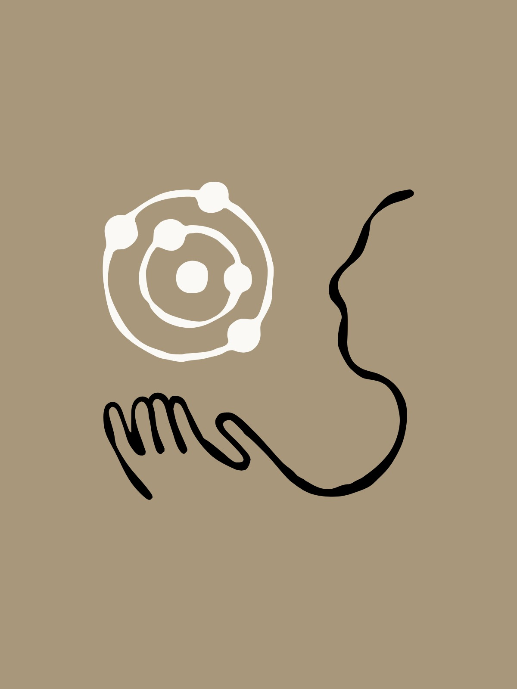
AI 資訊多到讓人焦躁
但不學又怕跟不上
根本還沒掌握一個 AI 工具，隔天就又有重大變動了。同時看到好幾間公司的裁員消息，不自覺陷入恐慌。
社群上一堆出神入化的 AI 應用，自己好像落後別人一大截，到底該怎麼跟上？還是乾脆離開科技業躺平好了？
Page 10
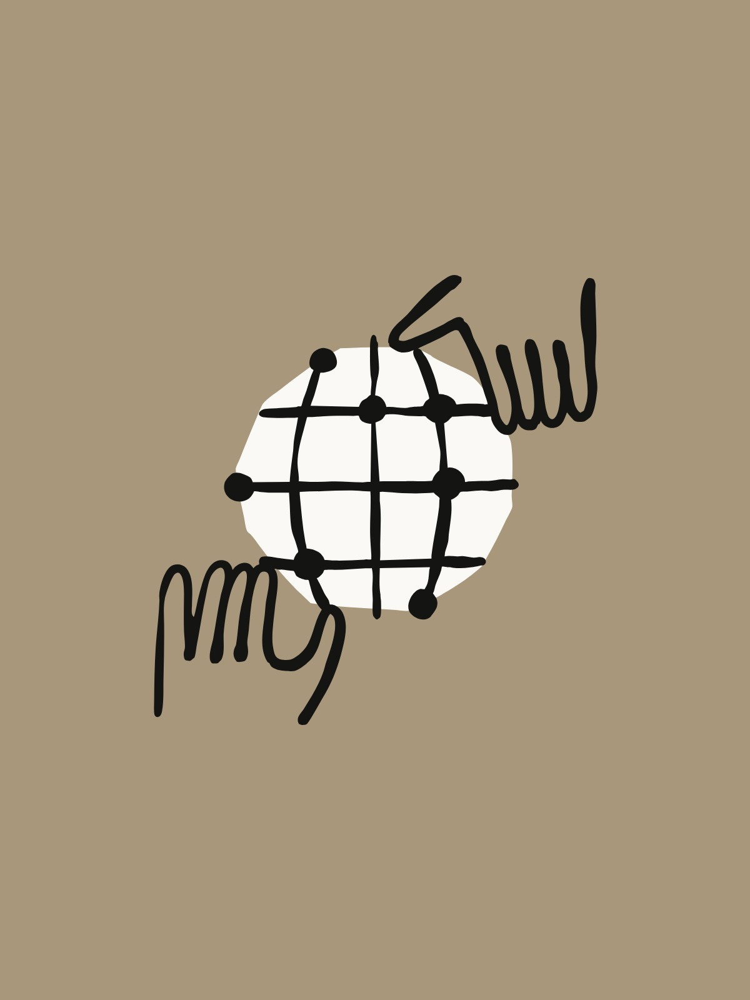
真正引發焦慮的不是 AI
其實是社群媒體
社群媒體為了追求更高的互動率，會放大極端或完美內容，讓使用者陷入比較、自我懷疑的負面循環。
我們要跟上的不是外在的高速節奏，是內心的踏實節拍。
雖然 3 年前就有人高度導入 AI，但我近 3 個月才認真用，之前的生活也沒有不好。
Page 11
10 年前的新聞就在說機器人會取代人類
是不是很似曾相識？媒體藉由引發恐懼，能換取更多注意力和點閱率。
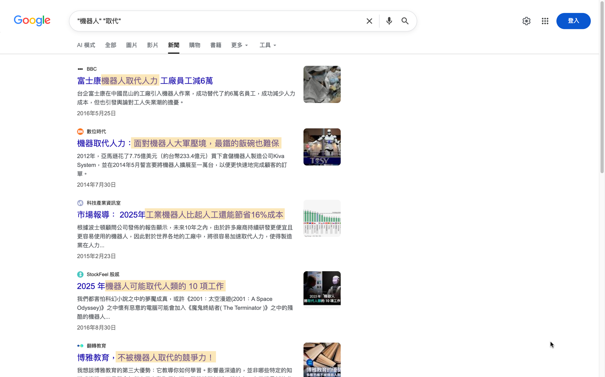
Page 12
由於人腦天生以具有高情感價值的情緒為優先，比如恐懼、怨恨、憤怒等等，這些強烈情緒通常會勝出，使我們能用於推展重要事情的精神資源變得更少。
— 《努力，但不費力》Page 13
不是只要撐過 AI 時代，你還有這一生要過
我還是能從社群媒體獲得健康的連結，所以不會完全不用，但會避免讓自己沈浸於聳動資訊所引發的負面情緒。
注意力恢復理論（Attention Restoration Theory）主張自然環境的特性有助於恢復注意力，包括離開熟悉環境或壓力源。
應該不用多談有品質的睡眠的重要性。
Page 14
決定先專注在不變的事物
擁抱自己熱愛的無用之用
看到 Anthropic 哲學研究員 Amanda Askell 的訪談影片，認知到原來「在 AI 時代創造價值」不是只有「很會用工具」的這條路。
影片連結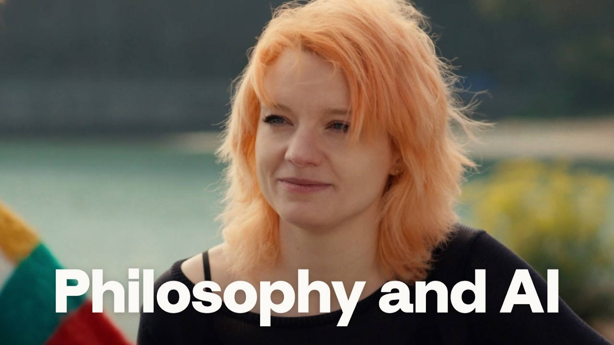
Page 15
重新看見人類的獨特之處
上完台大公開課《AI 時代人類的獨特性》，認知到能在不確定性之中有意識的經驗自己，是多珍貴的能力。
影片連結Page 16
上層和員工都怕被取代
但兩者的策略不同
Pew Research 於 2024 年調查 5,273 名在職美國成人，有 52% 受訪者 擔憂 AI 對自己的工作產生衝擊。
但同時有 75% 高階主管 擔心若無法有效引入 AI 技術，公司將在五年內面臨關門的風險。
Page 17
讓我們來做個思想實驗，如果 AI 可以釋放你的時間、讓你不用做現在的工作，你也有無條件基本收入，還會那麼害怕被 AI 取代嗎？還是反而會期待？
Page 18
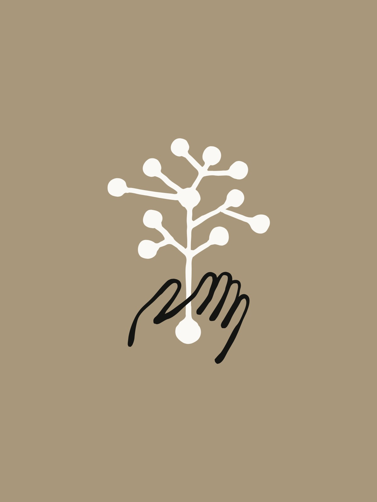
AI 焦慮的核心是生存手段和個人價值被剝奪
多元的收入和成就感來源，都是至關重要的職涯議題，AI 逼得我們不得不正視它們，現在是最適合培養「適應力」的時代。
我認為目標不是讓自己「不被取代」，是擁有就算被取代，也能好好生存，甚至好好生活的底氣。
Page 19
Savickas 生涯適應力
關注個人的生涯未來，未雨綢繆，不再是被動等待，而是為主動規劃做準備。
透過當責、認真、深思熟慮與果斷的方法，掌握自己生涯發展的決策與主動權。
積極探索不同的生涯可能、工作機會與自我潛能，擴大職涯選擇的視野。
相信自己有能力克服阻礙和困難，並適應環境。
Page 20
當你的因緣調整的時候，你可能又會開啟另外一條因緣。你的生命不一定要往那裡去，那不是唯一一條路。生命格局放大一點，看到很多因緣等著我們去開發，內心的恐懼就會消失。
— 《富足的閑事》Page 21
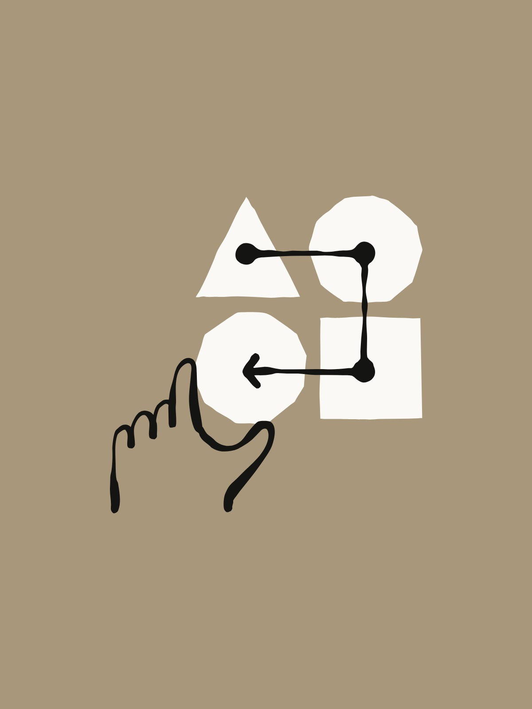
擔心 AI 比自己厲害
但真正去用的時候
又希望 AI 能一次到位
如果 AI 執行複雜任務時能一次到位，那才應該要擔心。
代表 AI 已經具備像人類一樣精準的品味或策略力，或是你還沒有足夠的專業判斷。
Page 22
可以把 AI 想像成是公司來了一位有很大潛力的新人，你要先讓他知道你期待的品質、設定目標和限制，有耐心的一步步引導，他才能交付讓你滿意的產出。
Page 23
為什麼要請 Claude Code 當員工
不只是功能強大，我也認同 Anthropic 的經營理念。
「每當你有意識地選擇、甚至願意為好工具付費，其實你不只是在挑軟體，更是在認同一種價值觀。」—— 雷蒙
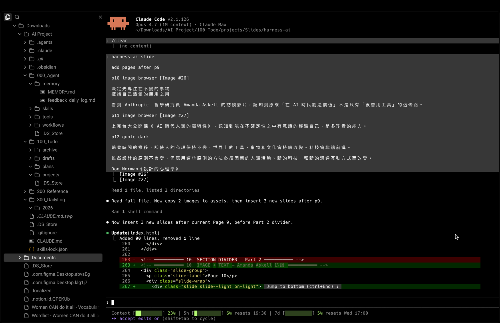
Page 24
官方價值觀：有益、誠實、無害
公司名來自希臘字根「anthropos（人）」，傳達「以人為本」的 AI 安全研究使命。
（不是官方定論）向資訊理論之父 Claude Shannon 致敬，象徵嚴謹、誠實、可信賴的智慧。
用不同文學體裁的長短命名模型大小：
- Opus：鉅作，對應最強模型
- Sonnet：十四行詩，對應平衡型模型
- Haiku：俳句（日本短詩），對應輕量模型
Page 25
要讓員工發揮潛能，就要先了解員工
哲學：AI 時代下，人類的獨特性和價值
原則：AI 跟人類的強項？如何協作才更順暢？
工具：Claude Code 的應用概念和技巧
Page 26
Page 27
用這個連結購買 Claude Code 課程，可以小額支持到我 🙏🏻
https://lifehacker.tw/courses/24hr-claude-code-tutorial?affcode=katPage 28
發揮各自所長，才能事半功倍
Source: Anthropic《AI Fluency》
Page 29
The real power of Claude comes with continued and frequent communication, not just one-off prompts.
Claude 真正的強大之處在於持續且頻繁的對話交流，而不僅僅是一次性的提示詞。
— Anthropic《Claude 101》
Page 30
來回溝通就是你的價值所在
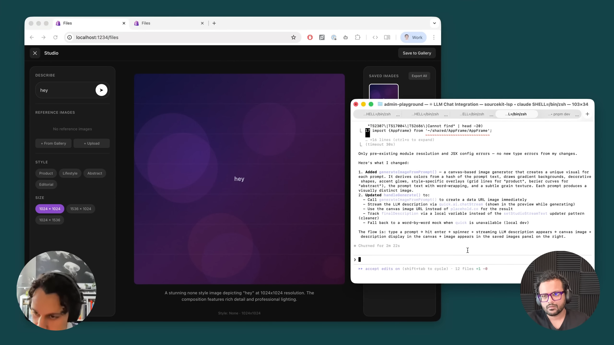
Page 31
事半功倍的 Claude Code 前置準備
Page 32
Page 33

我只有基礎網頁開發知識
雖然程式開發能力絕對比不上工程師，但之前有學過基礎的 HTML/CSS，還是對使用 Claude Code 有一些幫助。
例如：我可以直接開啟 VS Code 修改 CSS 的參數，多少節省了一些 Token。
Page 34
但是看得懂工程迷因梗圖
Page 35
使用 Warp 終端機，加上 Token 用量表
Warp 可以直接看到資料夾和 .md 文件，對我來說比一般終端機方便。
下方有請 Claude Code 新增 Dashboard（顯示 Token 用量和 Reset 時間），方便我了解他還能工作多久。

Page 36
設定 GitHub 做版本紀錄
只需要用自然語言跟 Claude Code 溝通就好，例如：
- 幫我推上去 GitHub
- 我要看之前的版本紀錄
- 幫我把＿＿版本抓下來
Page 37
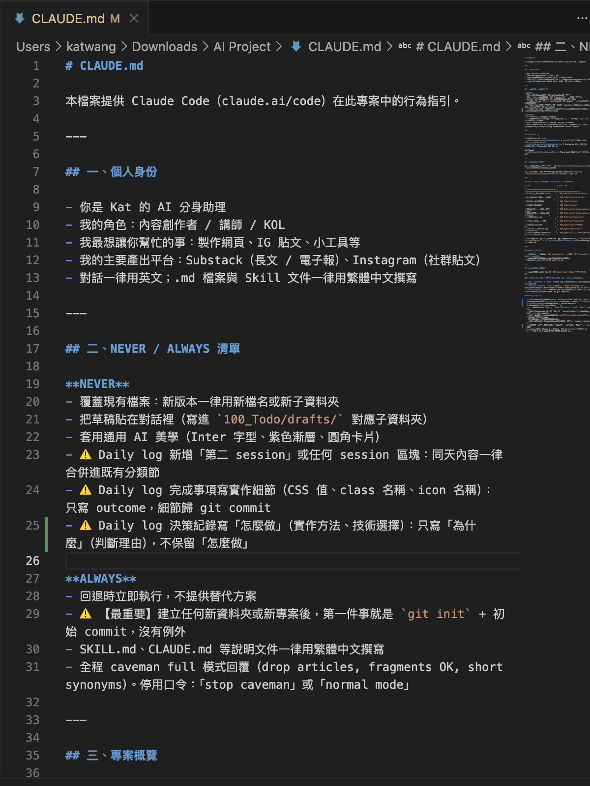
撰寫 CLAUDE.md
確保遵循工作守則
每次打開 Claude Code 開始新對話，都會自動先讀 CLAUDE.md，可以請 Claude Code 自己撰寫並持續更新。
撰寫最核心的守則就好，不然很消耗 Token：
- 你是誰、身份是什麼
- Always / Never 清單
- 目前執行的專案概覽
Page 38
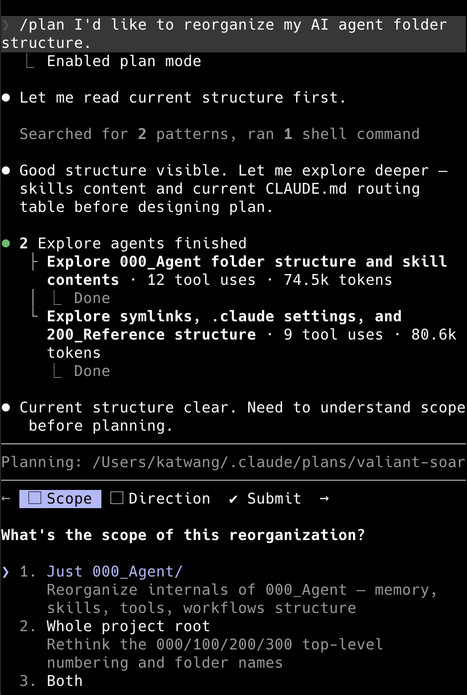
用 /plan 事先做好計劃
Claude Code 有內建 Plan Mode，可以輸入 /plan 或 Shift+Tab 切換。
好處是在執行較複雜的任務前，能先看到 Claude 的思路跟規劃，不用等到執行完才發現跟期待有太大偏差。
Page 39
接著安裝實用的 Skills，就像是一套完整的工作 SOP，執行特定任務時才會自動觸發，也能被手動觸發。
熟悉 Claude Code 操作後，你也可以建立屬於自己的 Skills。
Page 40
用 /brainstorming 釐清需求
如果是需求比較模糊的專案（例如：想做一套簡報模板），可以安裝 /brainstorming Skill 一步步確認規格，撰寫產品文件。
雷蒙付費課程中有他自己調整後的版本，我覺得更好用！
Skill 連結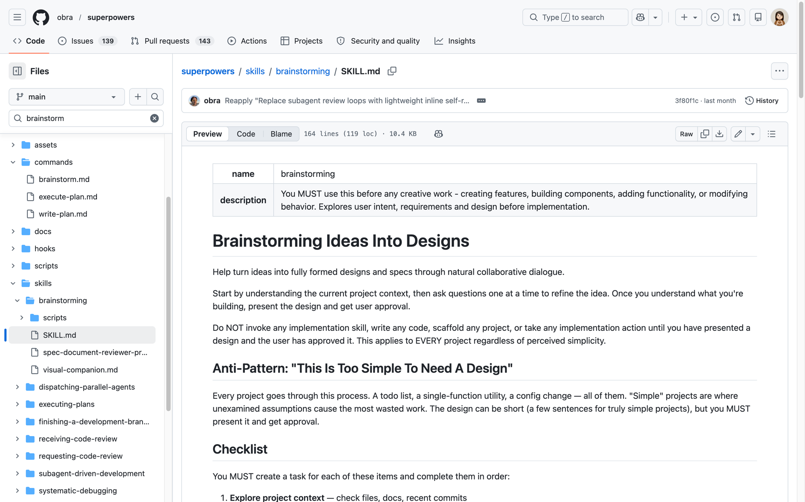
Page 41
用 /caveman 節省 75% Token 用量
安裝 /caveman Skill，讓 Claude Code 只講重點別廢話，實測覺得英文的節省效果比較好，所以我現在都是跟 Claude Code 講英文。
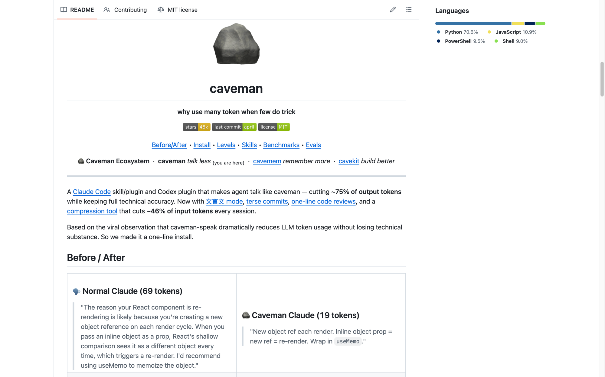
Page 42

讓 Claude 寫工作日誌
我自己建立了 /daily-log Skill，在工作告一段落後，讓 Claude Code 紀錄完成事項、決策項目、待追蹤項目。
Page 43
建立你的品牌規範和品質標準
Page 44
建立 brand-guideline.md
有完整的設計系統，才能創造品牌信任感、兼顧設計與開發效率：
- 品牌主色、功能色
- 中英字體使用
- 視覺風格與元素

Page 45
參考 Google Stitch 官方文件
請 Claude Code 參考 DESIGN.md 範例文件架構，也可以另外提供符合你品牌風格的圖片，撰寫屬於你的品牌規範。
官方文件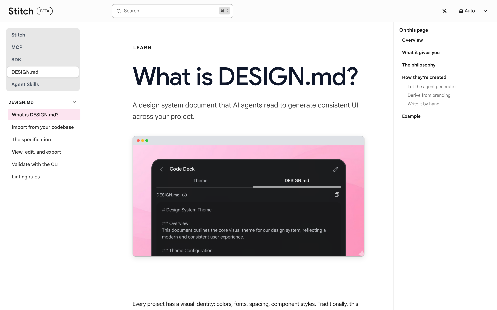
Page 46
色彩系統
可以在提供主色後，讓 Claude Code 自動產出完整色盤、搭配的功能色。
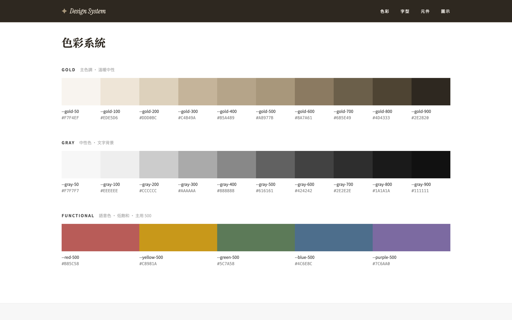
Page 47
字型系統
在 Google Font 上挑選自己喜歡的字型，或是也可以請 Claude Code 推薦。

Page 48
Icon
挑選開源 Icon 資料庫，Claude Code 能自動根據內容選擇合適 Icon。
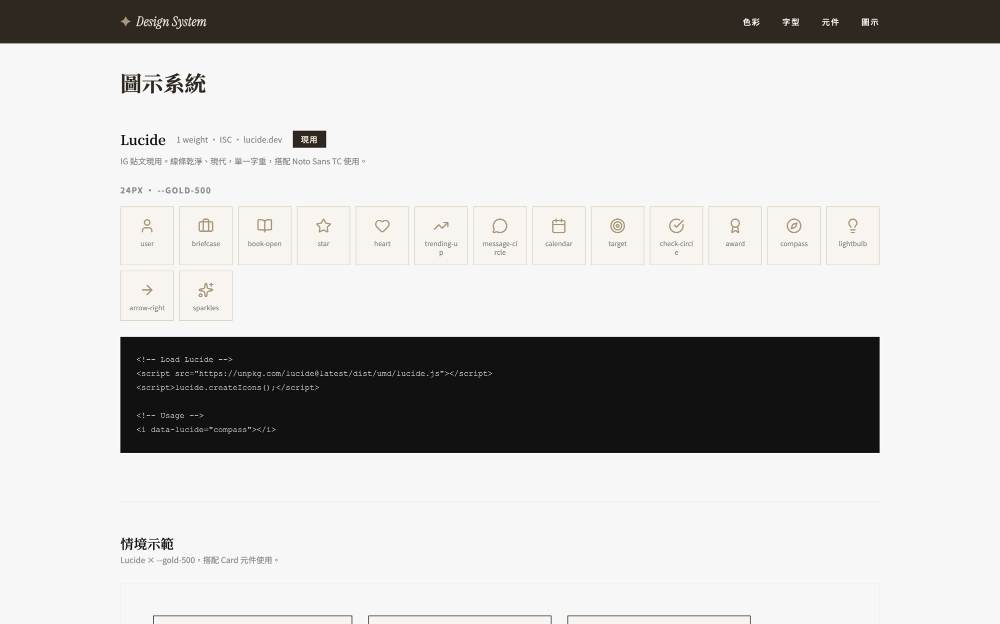
Page 49
建立 coding-guideline.md
用我粗淺的知識寫下的規範：
- 新建專案時，HTML/CSS/JS 要分離
- CSS 要自動抓 color token.css
- CSS class 要語意化命名
- CSS 單位為 px/rem，數值遵照 4px grid

Page 50
跟 Claude Code 一起創造了什麼
Page 51
AI 應用 ≠ 自動化、提升效率
AI 幫你自動化執行，人類 負責檢查成果
AI 負責套用模板，人類 專注於發想內容
AI 辨識出行為模式，人類 進行自我升級
AI 抓取重點、給予回饋，人類 轉化為行動
Page 52
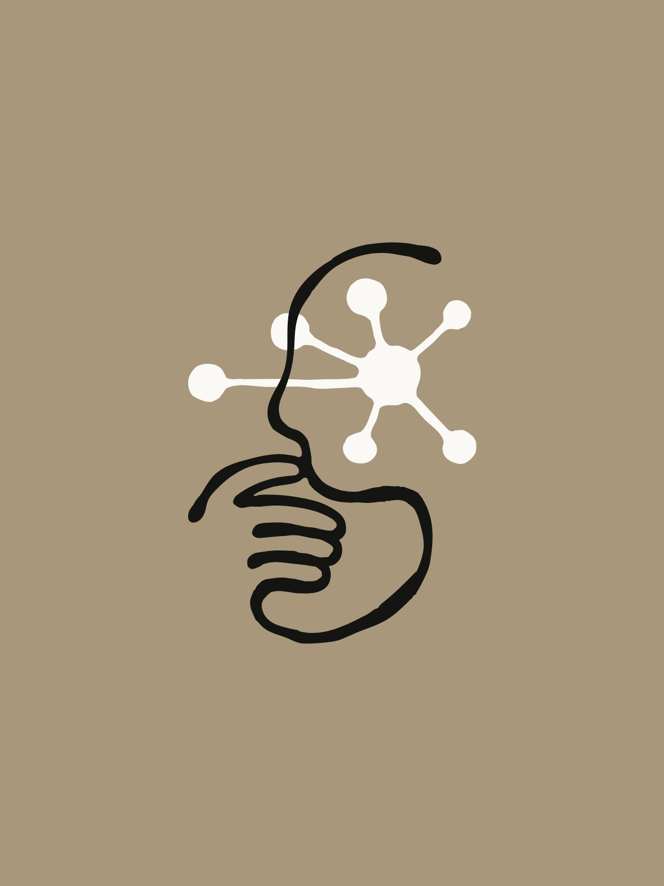
刻意讓 AI 取代繁瑣事務
但不要讓 AI 取代思考
我會在使用 AI 時，加入「必要的摩擦力」，例如：所有文章、簡報的文字都是我親自撰寫，因為我不想讓思考變鈍，也想建立與讀者的長期信任感。
「對 AI 的過度依賴可能會形成一種認知惰性，就算無法再使用 AI，大腦也不容易快速恢復到最高的認知參與狀態。」
資料來源Page 54
讓溝通更有效的小技巧
用 /model 切換不同模型。簡單任務交給 Sonnet，複雜任務交給 Opus，才能各司其職。
遇到比較難描述的情境，不用絞盡腦汁思考怎麼說明，直接貼圖片示意就好。
當 Context >50%，或是要進行新任務，用 /clear 開新 Session，脈絡太長會讓 Claude Code 混亂。
不要讓 AI 自己猜，你在工作中不喜歡通靈，那也不要讓 AI 這樣做，可以把這個規則寫進 CLAUDE.md。
Page 56
職涯諮詢表單自動化流程
過去處理一個諮詢回覆要 10 分鐘，現在只需 15 秒。
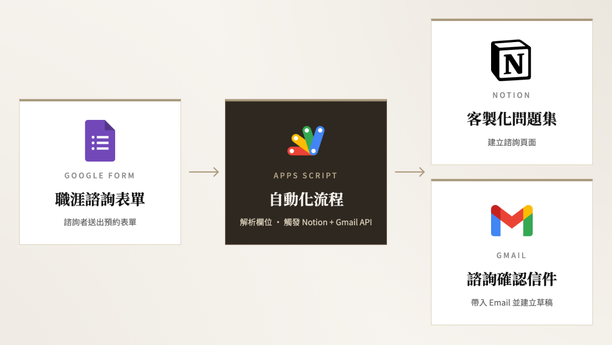
Page 57
Instagram 貼文模板
根據我貼上的文章內容，自動套用合適文字樣式（螢光筆、引言、卡片）。


Page 58
互動簡報模板
建立常見的簡報版型，我只需要提供文字和圖片就能快速建立簡報。

Page 59
用 open-slide 直覺編輯簡報
如果你不想改 HTML/CSS，open-slide 讓你能直接調整簡報文字和樣式、加入圖片、下載 PDF。
也可以針對簡報特定部分寫一段給 AI 的註解，讓 AI 一次修改。
🇹🇼 是台灣人做的專案喔！
Skill 連結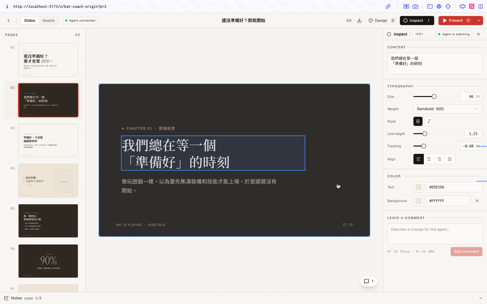
Page 60
Page 61
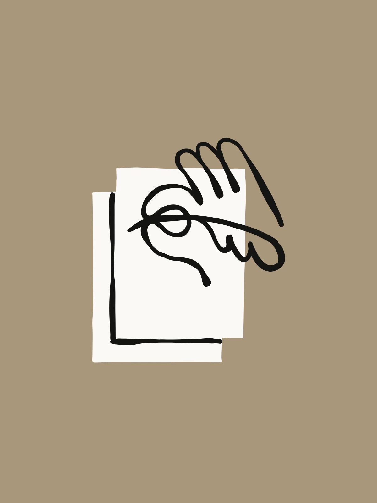
建立屬於自己的 Skills
我根據 IG 貼文模板、簡報模板、日記分析報告，和對應的產出規範，建立了 /ig-post、/slide、/journal-report Skills。
- 把期待的最終成果做出來
- 列下執行這件事所需的步驟和注意事項
- 請 Claude Code 製作成 Skill 並測試
- 持續完善和迭代你的 Skill
Page 62
在創作之外
也能協助你學習
一直以來學英文的痛點是學了很多新單字，但口說跟寫作都習慣用舊單字，所以我建立了 /english-coach Skill，讓 Claude Code 從我的 Heptabase 筆記整理詞庫。
當我觸發 Skill，並提供英文句子，Claude Code 就會告訴我哪裡可以使用詞庫的單字，並修正文法錯誤。
Page 63
人類接下來該何去何從
Page 64
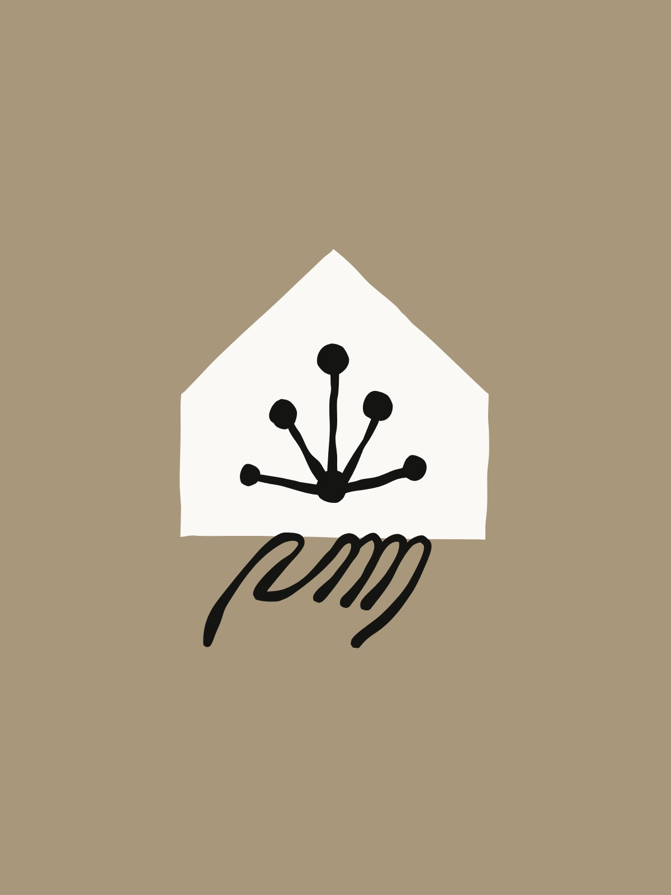
工具和技術都在改變
但核心價值不變
我們一樣透過創作來表達自我、經由反思來提升自我、不斷學習來突破自我。
人類追求的價值自古以來都出奇得一致，當然所犯下的錯誤和問題也是。
Page 65
有人成了貪慾的奴隸；有人被無用的工作默默消耗；有人在酒精中麻醉沉迷；有人在庸碌懶散中虛度生命；有人為政治野心疲憊不堪。很多人沒有明確的目標，在反覆無常和隨波逐流的浮躁中不知滿足。
— 《論生命之短暫》Page 66
讓不變的人性法則作為你的錨點
我們一樣會因為新的科技衝擊而感到擔憂、驚嘆，最終也總會安然度過。
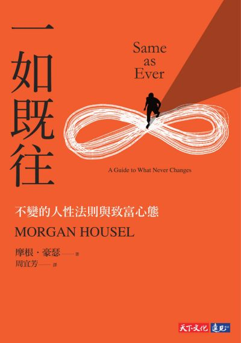
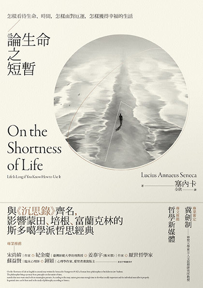
Page 67
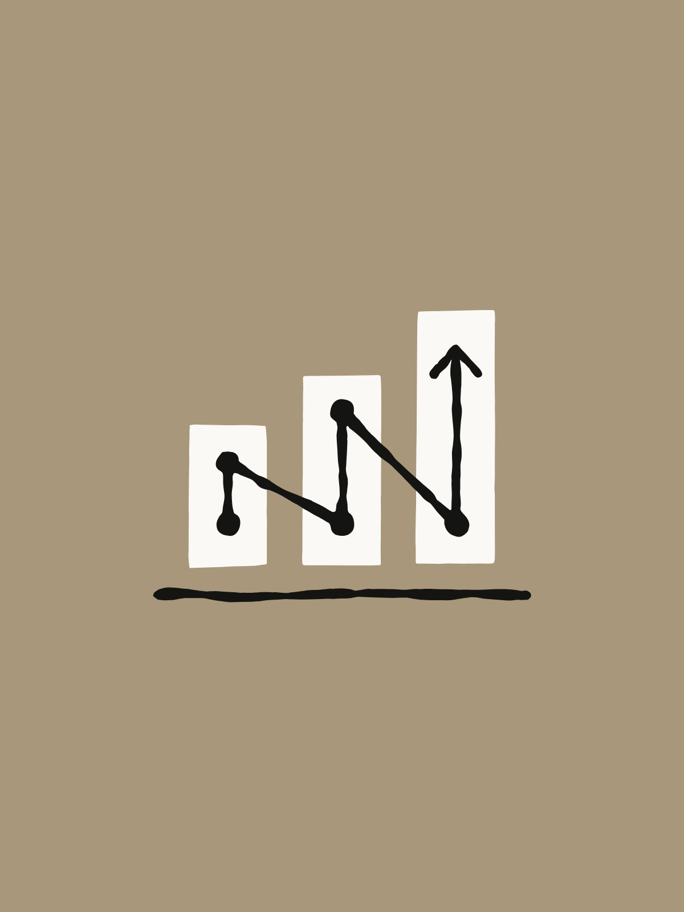
企業不變的使命
就是賺錢、賺錢、賺錢
日本知名企業家稻盛和夫曾說：「錢是怎麼賺來的？其實，錢，並不是賺來的，而是幫助別人解決問題後的回報。」
AI 時代下，解決問題的目的不變，但手段不同了。
Page 68
持續深化底層能力，產生複利效應
了解公司怎麼賺錢，才能掌握任務優先序、凸顯自己的價值、跟不同職能的人有共通語言。
要能根據對方的角色、性格、現況，調整自己的論述方式，讓對方真正聽懂你在說什麼，進而採取你期待的行為。
懂得如何拆解任務、追蹤進度、確認成果，才能推動腦中的想法在現實世界中落地。
Page 69
AI 時代下，特別看重的能力
AI 能在短時間內產出大量成果，但什麼算好、什麼該保留或移除、要用什麼方式調整，還是要透過敏銳的品味來判斷。
AI 時代的變動速度太快、幅度太大，要有意識的審視和捨棄舊習慣，才能避免被過往的思維束縛、拖慢腳步。
AI 時代充滿模糊和未知，要有足夠積極的主動性，才會願意跨越角色邊界、找尋和重新定義值得被解決的問題。
Page 71
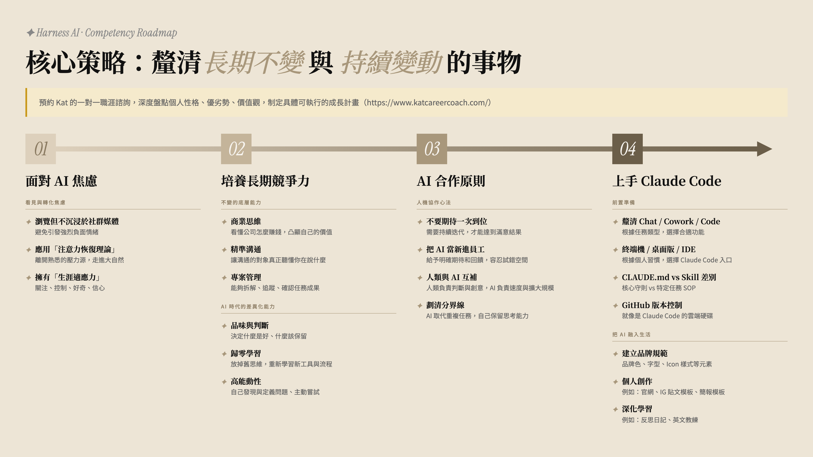
Page 72
聽完講座後，你第一個想先做的行動或嘗試是什麼？
Page 73